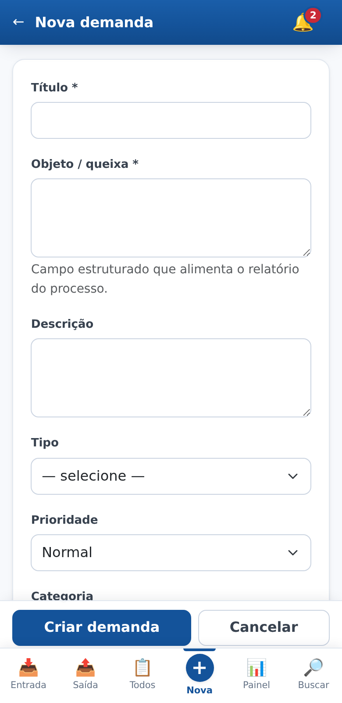
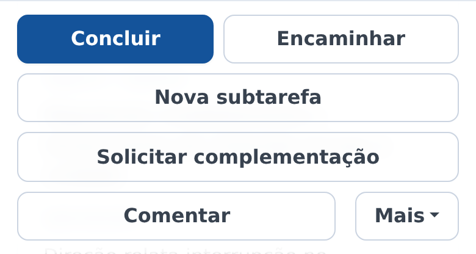
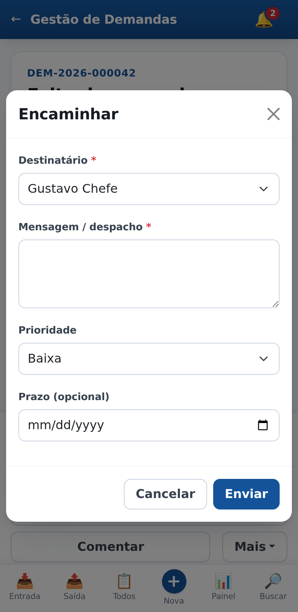
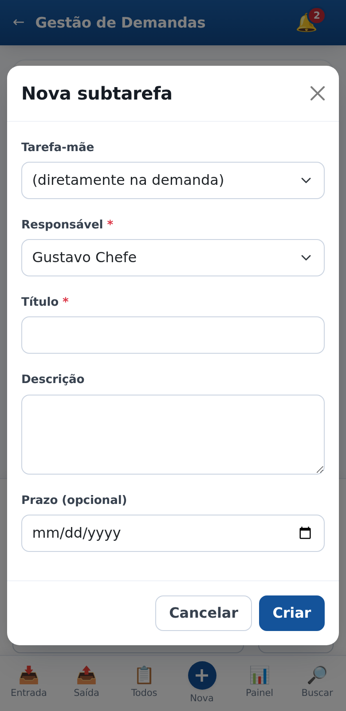
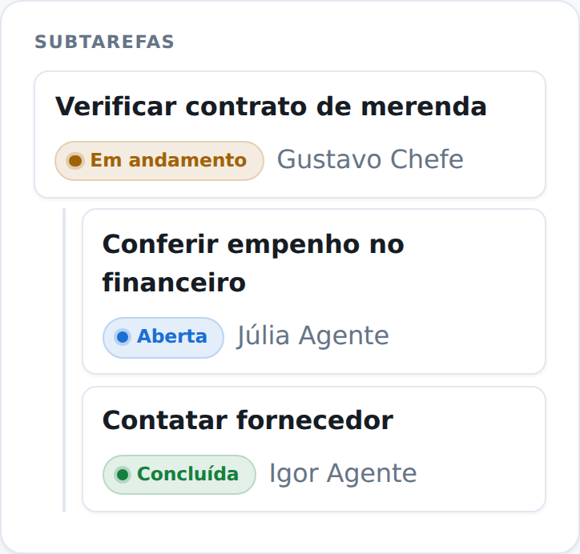
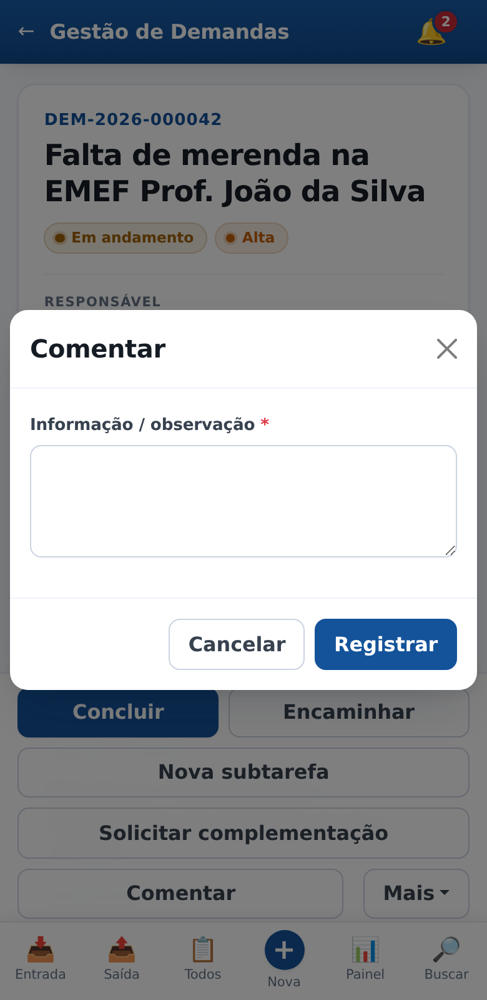
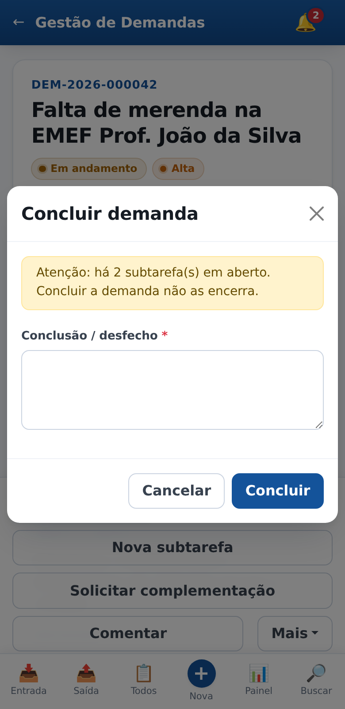

Guia rápido das funções do dia a dia. Cada tela abaixo é a que você vê no celular. Se ficar em dúvida em algum ponto, procure a Gerência de Tecnologia da Informação.
1. Antes de começar: demanda e subtarefa
A demanda é o assunto inteiro — por exemplo, "falta de merenda na EMEF João da Silva". Ela tem um número próprio (DEM-2026-000042), gerado pelo sistema, e um responsável atual: a pessoa que responde por ela naquele momento.
A subtarefa é um pedaço do trabalho que você entrega a outra pessoa sem deixar de responder pela demanda. Uma demanda pode ter várias subtarefas, inclusive subtarefas dentro de subtarefas.
A diferença entre encaminhar e criar subtarefa é a que mais gera dúvida, e está explicada no item 6.
3. Meus processos
É a sua lista de trabalho e de acompanhamento, num lugar só. Aparece aqui todo processo que passa por você: os que você abriu, os que encaminhou, os que repartiu em subtarefas e aqueles em que executou alguma tarefa.
A etiqueta colorida responde à pergunta que mais importa — de quem este processo está esperando?
- Aguardando minha resposta — a bola é sua. Ou existe tarefa atribuída a você, ou o processo é seu e ainda não teve andamento.
- Aguardando outras pessoas — a responsabilidade está com outra pessoa. Vale tanto para o que você encaminhou quanto para aquele em que você já fez a sua parte e devolveu.
- Encerrado — o processo foi concluído.
Em cada item da lista você lê, de relance:
- o número do processo e o título;
- de quem ele está aguardando;
- a situação (Aberta, Em andamento, Aguardando complementação…);
- a prioridade (Normal, Alta, Urgente);
- o cronograma — as próximas tarefas em aberto;
- o prazo.
Os filtros no alto cruzam duas perguntas: de quem o processo aguarda e em que situação ele está — inclusive Encerrados, que é o seu histórico. A caixa de busca procura por número ou título dentro da própria lista. Toque em qualquer item para abrir o processo.
Se um processo não está aqui, é porque você nunca teve vínculo com ele. Continua visível em Todos e na Busca, dentro do que você tem permissão de ver.
4. Abrir uma nova demanda
Toque em Nova na barra de navegação.

Dois campos são obrigatórios:
- Título — uma frase curta que identifique o assunto. Escreva algo que outra pessoa entenda sem abrir a demanda.
- Objeto / queixa — o relato do que aconteceu. É este campo que alimenta o relatório enviado ao processo, então descreva com clareza.
Os demais ajudam a organizar e cobrar:
- Prioridade — use Urgente com parcimônia, senão perde o sentido.
- Prazo — contado em dias úteis, considerando feriados.
- Escola e pessoas envolvidas, quando o caso pedir.
- Sigilo restrito — marque quando houver dado de aluno ou de família. Isso limita quem pode ver a demanda.
- Nº do processo Solar — se já existir, preencha; é o que permite achar a demanda a partir do processo.
O número da demanda é gerado pelo sistema ao salvar. Você não precisa (nem consegue) escolher.
5. Movimentar uma demanda
Abra a demanda e desça até a barra de ações. O botão azul cheio é o próximo passo mais provável; os demais ficam ao lado, e as ações menos usadas ficam no botão Mais.

Encaminhar
Passa a demanda para outra pessoa. Ela deixa de ser sua: quem receber vira o responsável atual e a demanda entra na caixa de entrada dele. Use quando o assunto todo é de outro setor.

O despacho é obrigatório: escreva o que a pessoa precisa fazer. Pode ajustar prioridade e prazo no mesmo passo.
Nova subtarefa
Entrega um pedaço do trabalho, sem passar a demanda. Você continua responsável pelo conjunto. É a diferença para o encaminhamento:
Encaminhar
A demanda inteira muda de dono. Passa a aguardar a outra pessoa.
Nova subtarefa
Só um pedaço vai para outra pessoa. A demanda continua com você.

Em Tarefa-mãe, deixe (diretamente na demanda) para criar uma tarefa solta na demanda. Escolha uma tarefa existente apenas quando a nova for um desdobramento dela.
As subtarefas aparecem em árvore, com situação e responsável:

Alterar uma tarefa
Corrige o título, a descrição e o prazo de uma tarefa que ninguém realizou ainda. É para o prazo esquecido na criação, ou para dar mais prazo a quem precisa. O botão Alterar aparece na subtarefa, ao lado de "Trocar destino", para quem a delegou.
Vale enquanto a pessoa não se manifestou. Depois que ela comenta, devolve ou conclui, a tarefa passa a ser registro de terceiro: aí o caminho é Retificar ou Ressalva, na linha do tempo. A justificativa é obrigatória, a alteração fica registrada dizendo o que mudou, e quem recebeu a tarefa é avisado quando o prazo muda.
Cuidado para não confundir: Retificar, na linha do tempo, corrige o texto do registro — não mexe no prazo da tarefa.
Concluir tarefa
Use quando você fez o que foi pedido. Registre a resposta e anexe o que produziu (PDF, planilha, foto) ou informe um link do Google Drive. Quem delegou é avisado.
Devolver tarefa
Devolver não significa "já fiz". Significa que você não vai executar a tarefa — não é do seu setor, falta informação, foi enviada por engano. Ela volta para quem delegou.
Se você executou o serviço, o botão certo é Concluir tarefa. Em ambos os casos é obrigatório explicar o motivo.
Comentar
Registra uma informação na demanda sem mudar nada: não troca o responsável, não altera a situação, não mexe no prazo. Serve para anotar um telefonema, uma orientação, um combinado.

Complementação
Solicitar complementação é para quando falta informação para trabalhar. A demanda volta para quem agiu antes, entra em Aguardando complementação e o prazo fica suspenso — o tempo de espera não conta contra você.
Quem recebe o pedido responde pelo botão Prestar complementação, que aparece nessa situação. Ao enviar (com anexos, se for o caso), a demanda volta a Em andamento e a contagem do prazo é retomada.
Concluir a demanda
Encerra o assunto. A conclusão/desfecho é obrigatória: sem ela o sistema não conclui. Esse texto vai para o relatório do processo, então descreva o que foi resolvido.

Se ainda houver subtarefas em aberto, o sistema avisa. Concluir a demanda não encerra as subtarefas automaticamente.
6. O que o sistema não deixa fazer
Estas travas existem porque a demanda pode virar processo administrativo, e o histórico precisa ser confiável.
- Nada é apagado. Não existe excluir. O que sai de uso é inativado, sempre com justificativa e com registro de quem fez.
- O histórico não se altera. Movimentações, comentários e anexos não podem ser editados nem removidos depois de gravados — nem pelo administrador.
- Errou no texto? Enquanto ninguém tiver agido depois de você, dá para retificar. Depois disso, resta registrar uma ressalva: o texto errado continua visível, com a correção ao lado. Nos dois casos, vale o que estiver registrado — nada é apagado.
- Toda alteração exige justificativa. Editar, inativar, retificar e ressalvar pedem um motivo escrito.
- Você só vê o que lhe compete. A visibilidade segue o organograma e a sua participação na tramitação. Demandas de sigilo restrito são mais fechadas ainda.
Sistema de Gestão de Demandas — Secretaria Municipal de Educação de Ribeirão Preto.